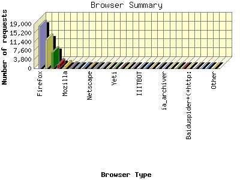

Report generated by Analog 6.0 and Report Magic 2.21
|
Web Server Statistics for "Harish Narayanan (hnarayan) - January 2008" Report generated by Analog 6.0 and Report Magic 2.21 |
The Browser Summary identifies the most popular web browsers used to visit
this site.
Browsers are broken down by recognized categories such as
Netscape Navigator/Communicator, Microsoft Internet Explorer, WebTV, Opera
and the like. Within each category is also a subgroup by version number
such as 'MSIE 5.0' or 'Netscape 4.5'.
This report shows all results. This report is sorted by number of requests.


| Browser Type | Number of requests | Number of bytes transferred | Percentage of the bytes | Percentage of the requests | |
|---|---|---|---|---|---|
| 1. | Firefox | 18,354 | 457.222 MB | 23.11% | 43.14% |
| Firefox/2 | 16,539 | 426.999 MB | 21.58% | 38.87% | |
| Firefox/1 | 1,572 | 27.425 MB | 1.39% | 3.69% | |
| Firefox/3 | 214 | 2.751 MB | 0.14% | 0.50% | |
| Firefox/0 | 14 | 23.928 KB | 0.00% | 0.03% | |
| 2. | MSIE | 12,317 | 415.460 MB | 21.00% | 28.95% |
| MSIE/6 | 5,366 | 161.389 MB | 8.16% | 12.61% | |
| MSIE/7 | 6,925 | 253.022 MB | 12.79% | 16.28% | |
| MSIE/5 | 25 | 1.022 MB | 0.05% | 0.06% | |
| MSIE/2 | 1 | 28.457 KB | 0.00% | 0.00% | |
| 3. | Netscape (compatible) | 6,815 | 907.967 MB | 45.89% | 16.02% |
| 4. | Safari | 1,871 | 54.959 MB | 2.78% | 4.40% |
| Safari/523 | 1,747 | 45.291 MB | 2.29% | 4.11% | |
| Safari/419 | 84 | 3.382 MB | 0.17% | 0.20% | |
| Safari/125 | 19 | 151.688 KB | 0.01% | 0.04% | |
| Safari/522 | 15 | 27.604 KB | 0.00% | 0.04% | |
| Safari/312 | 3 | 5.640 MB | 0.28% | 0.01% | |
| 5. | Mozilla | 975 | 8.346 MB | 0.42% | 2.29% |
| Mozilla/1 | 939 | 8.032 MB | 0.41% | 2.21% | |
| 6. | Opera | 537 | 3.606 MB | 0.18% | 1.26% |
| Opera/9 | 535 | 3.313 MB | 0.17% | 1.26% | |
| Opera/8 | 2 | 299.978 KB | 0.01% | 0.01% | |
| 7. | psbot | 314 | 3.354 MB | 0.17% | 0.74% |
| psbot/0 | 314 | 3.354 MB | 0.17% | 0.74% | |
| 8. | msnbot | 268 | 78.824 MB | 3.98% | 0.63% |
| msnbot/1 | 268 | 78.824 MB | 3.98% | 0.63% | |
| 9. | Netscape | 248 | 4.112 MB | 0.21% | 0.58% |
| Netscape/4 | 64 | 1.429 MB | 0.07% | 0.15% | |
| Netscape/7 | 183 | 2.465 MB | 0.12% | 0.43% | |
| 10. | Konqueror | 174 | 408.967 KB | 0.02% | 0.41% |
| Konqueror/3 | 159 | 384.503 KB | 0.02% | 0.37% | |
| Konqueror/4 | 15 | 24.464 KB | 0.00% | 0.04% | |
| 11. | Googlebot-Image | 166 | 11.122 MB | 0.56% | 0.39% |
| 12. | msnbot-media | 126 | 6.559 MB | 0.33% | 0.30% |
| msnbot-media/1 | 126 | 6.559 MB | 0.33% | 0.30% | |
| 13. | Yeti | 100 | 924.132 KB | 0.05% | 0.23% |
| Yeti/0 | 100 | 924.132 KB | 0.05% | 0.23% | |
| 14. | Camino | 68 | 256.896 KB | 0.01% | 0.16% |
| Camino/1 | 68 | 256.896 KB | 0.01% | 0.16% | |
| 15. | Ocelli | 48 | 4.717 MB | 0.24% | 0.11% |
| Ocelli/1 | 48 | 4.717 MB | 0.24% | 0.11% | |
| 16. | Sosospider+(+http: | 24 | 187.527 KB | 0.01% | 0.06% |
| Sosospider+(+http://help | 24 | 187.527 KB | 0.01% | 0.06% | |
| 17. | IIITBOT | 15 | 187.046 KB | 0.01% | 0.04% |
| IIITBOT/1 | 15 | 187.046 KB | 0.01% | 0.04% | |
| 18. | MPlayer | 14 | 8.393 MB | 0.42% | 0.03% |
| 19. | ConveraCrawler | 13 | 100.468 KB | 0.01% | 0.03% |
| ConveraCrawler/0 | 13 | 100.468 KB | 0.01% | 0.03% | |
| 20. | dragonfly(ebingbong#playstarmusic.com) | 11 | 474.627 KB | 0.02% | 0.03% |
| 21. | ia_archiver | 10 | 164.670 KB | 0.01% | 0.02% |
| 22. | RMA | 7 | 5.568 MB | 0.28% | 0.02% |
| 23. | Windows-Media-Player | 7 | 3.715 MB | 0.19% | 0.02% |
| 24. | Java | 6 | 14.489 KB | 0.00% | 0.01% |
| Java/1 | 6 | 14.489 KB | 0.00% | 0.01% | |
| 25. | Baiduspider+(+http: | 5 | 36.067 KB | 0.00% | 0.01% |
| Baiduspider+(+http://www | 5 | 36.067 KB | 0.00% | 0.01% | |
| 26. | Sosoimagespider+(+http: | 4 | 93.212 KB | 0.01% | 0.01% |
| Sosoimagespider+(+http://help | 4 | 93.212 KB | 0.01% | 0.01% | |
| 27. | WebAlta Crawler | 4 | 24.313 KB | 0.00% | 0.01% |
| WebAlta Crawler/2 | 4 | 24.313 KB | 0.00% | 0.01% | |
| 28. | WordPress | 4 | 44.049 KB | 0.00% | 0.01% |
| WordPress/2 | 4 | 44.049 KB | 0.00% | 0.01% | |
| 29. | Speedy Spider (http: | 4 | 15.839 KB | 0.00% | 0.01% |
| Speedy Spider (http://www | 4 | 15.839 KB | 0.00% | 0.01% | |
| 30. | SiteBar | 3 | 1.608 KB | 0.00% | 0.01% |
| 31. | Yahoo-MMCrawler | 3 | 0.000 B | 0.00% | 0.01% |
| 32. | Wget | 3 | 48.405 KB | 0.00% | 0.01% |
| Wget/1 | 3 | 48.405 KB | 0.00% | 0.01% | |
| 33. | bot | 3 | 20.403 KB | 0.00% | 0.01% |
| bot/1 | 3 | 20.403 KB | 0.00% | 0.01% | |
| 34. | webcollage | 3 | 74.029 KB | 0.00% | 0.01% |
| 35. | IRP_edu_bot | 2 | 15.404 KB | 0.00% | 0.01% |
| IRP_edu_bot/Nutch-1 | 2 | 15.404 KB | 0.00% | 0.01% | |
| 36. | W3C_Validator | 2 | 13.271 KB | 0.00% | 0.01% |
| W3C_Validator/1 | 2 | 13.271 KB | 0.00% | 0.01% | |
| 37. | Googlebot | 2 | 1.170 MB | 0.06% | 0.01% |
| 38. | voyager-hc | 2 | 7.357 KB | 0.00% | 0.01% |
| voyager-hc/1 | 2 | 7.357 KB | 0.00% | 0.01% | |
| 39. | Basalt v090b | 1 | 5.537 KB | 0.00% | 0.00% |
| 40. | Jyxobot | 1 | 441.000 B | 0.00% | 0.00% |
| Jyxobot/1 | 1 | 441.000 B | 0.00% | 0.00% | |
| 41. | Grub | 1 | 5.537 KB | 0.00% | 0.00% |
| Grub/2 | 1 | 5.537 KB | 0.00% | 0.00% | |
| 42. | oBot | 1 | 0.000 B | 0.00% | 0.00% |
| 43. | FAST Enterprise Crawler 6 | 1 | 0.000 B | 0.00% | 0.00% |
| 44. | libwww-perl | 1 | 5.537 KB | 0.00% | 0.00% |
| libwww-perl/5 | 1 | 5.537 KB | 0.00% | 0.00% | |
| 45. | Gigabot | 1 | 22.024 KB | 0.00% | 0.00% |
| Gigabot/3 | 1 | 22.024 KB | 0.00% | 0.00% | |
| 46. | Balihoo | 1 | 5.537 KB | 0.00% | 0.00% |
| Balihoo/Nutch-1 | 1 | 5.537 KB | 0.00% | 0.00% | |
| 47. | ymalvlBtqcofvhbaiqbepvlyhnrw | 1 | 7.084 KB | 0.00% | 0.00% |
| 48. | nutch | 1 | 5.537 KB | 0.00% | 0.00% |
| nutch/Nutch-1 | 1 | 5.537 KB | 0.00% | 0.00% | |
| 49. | Pagebull http: | 1 | 223.583 KB | 0.01% | 0.00% |
| 50. | Sleipnir | 1 | 549.000 B | 0.00% | 0.00% |
| 51. | multicrawler (+http: | 1 | 798.000 B | 0.00% | 0.00% |
| multicrawler (+http://sw | 1 | 798.000 B | 0.00% | 0.00% | |
| 52. | DataFountains | 1 | 7.702 KB | 0.00% | 0.00% |
| DataFountains/DMOZ | 1 | 7.702 KB | 0.00% | 0.00% | |
| 53. | kbjmejqewnvv3svjikw hhnxjk | 1 | 7.063 KB | 0.00% | 0.00% |
This report was generated on March 24, 2008 11:59.
Report time frame January 1, 2008 00:07 to January 31, 2008 23:58.
| Web statistics report produced by: | |
 Analog 6.0 Analog 6.0 |  Report Magic 2.21 Report Magic 2.21 |